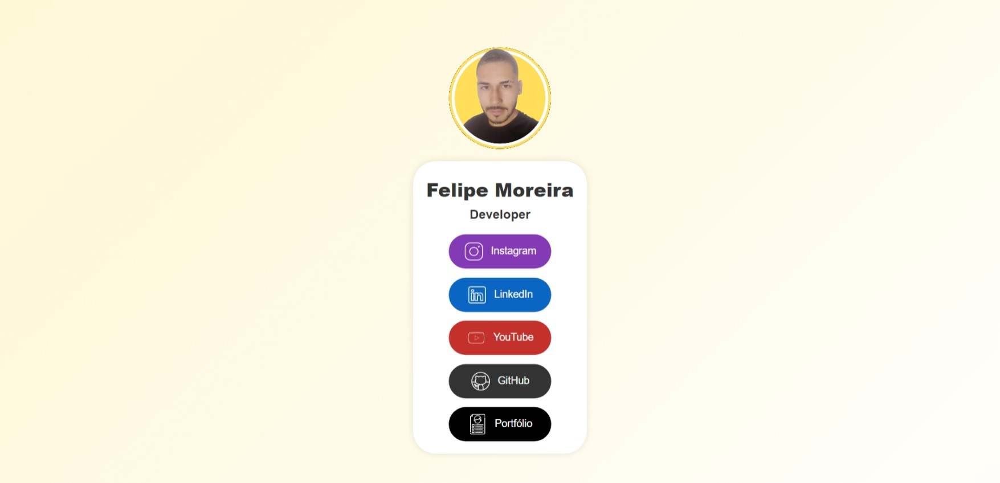
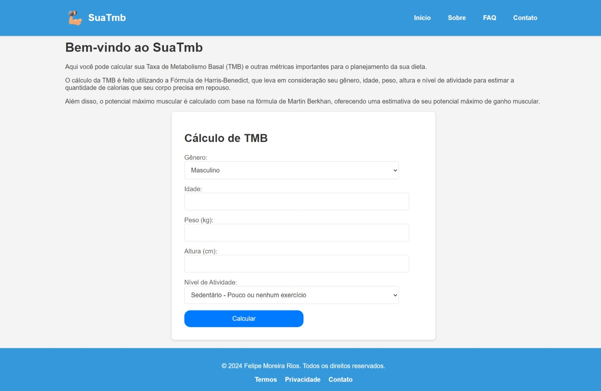
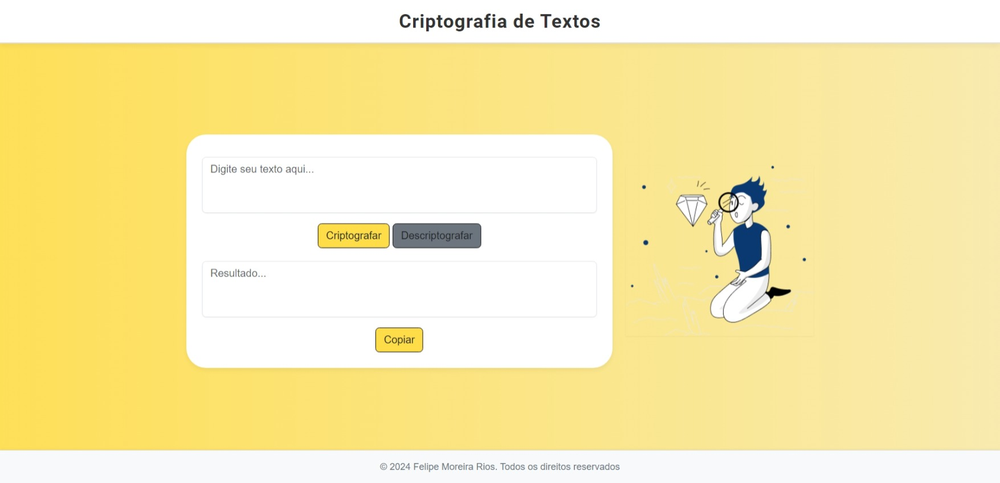
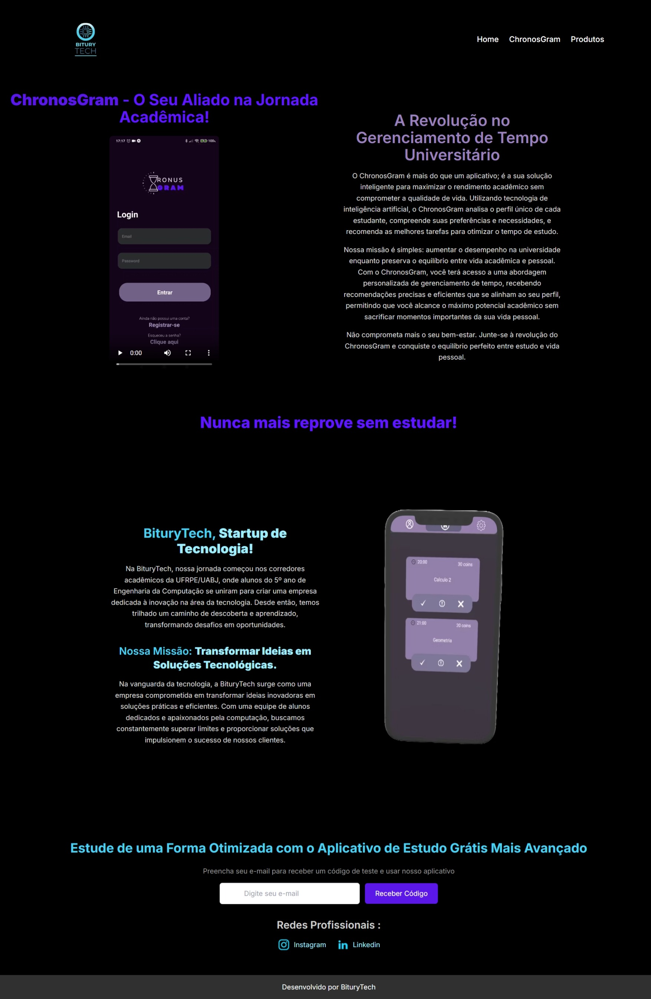
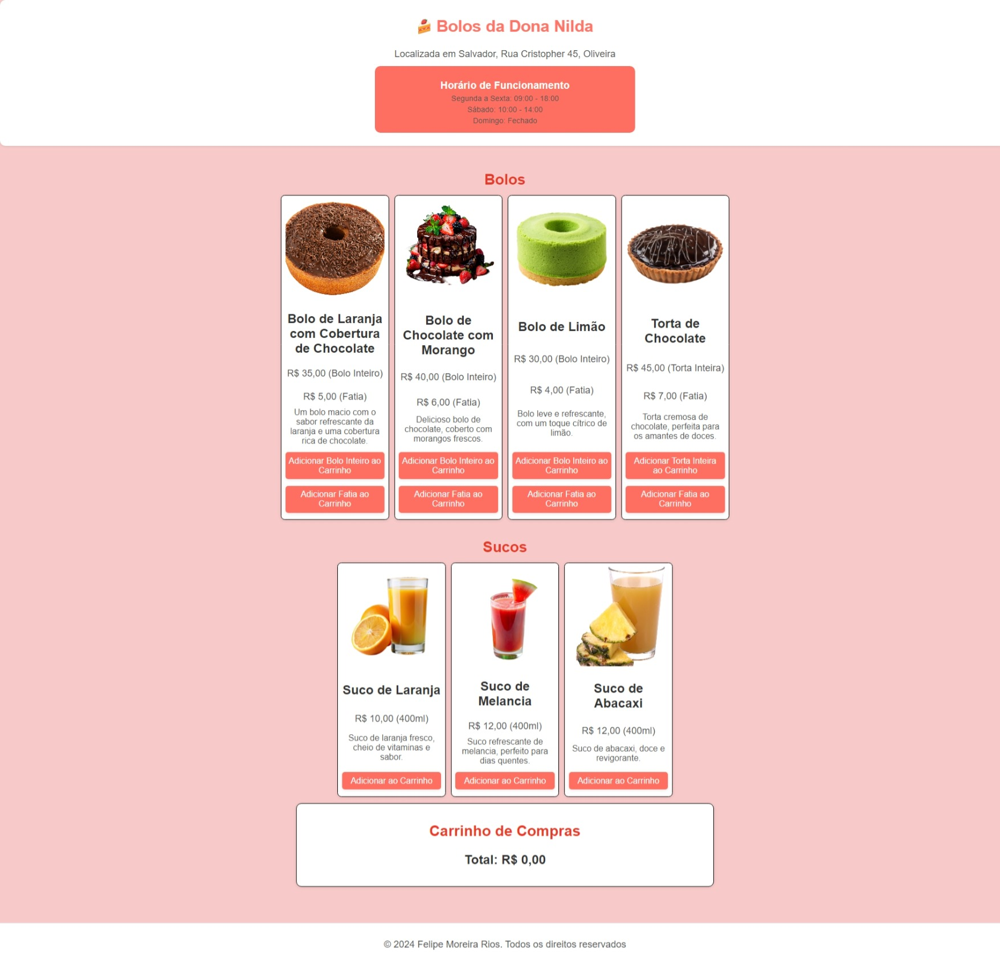

Meus Projetos
Aqui estão alguns dos projetos em que trabalhei. Eles abrangem uma variedade de tecnologias e abordagens, refletindo minha experiência e aprendizado.
Projetos em Destaque
LipeLacross - Redes Sociais
Uma página feita com Vue para disponibilizar links de redes sociais. Este projeto visa fornecer um local centralizado onde usuários podem acessar facilmente os links para os perfis de redes sociais.
🔨 Funcionalidades do projeto:
- Visualização de Perfil: Exibe a foto de perfil, nome e profissão.
- Links de Redes Sociais: Fornece links para diversas redes sociais, como Instagram, LinkedIn, YouTube e GitHub.
- Animações: Inclui animações suaves para elementos ao passar o mouse e durante a renderização inicial.
Sistema de Geração de Certificados

Um projeto desenvolvido com Django e SQLite para controle de eventos e geração de certificados. Este sistema é ideal para eventos onde a emissão de certificados para participantes é necessária.
🔨 Funcionalidades do Projeto:
- Controle de Eventos: Gerenciamento de eventos com informações detalhadas.
- Geração de Certificados: Criação e armazenamento de certificados personalizados em formato PNG.
- Busca de Certificados: Funcionalidade para procurar certificados por e-mail.
- Visualização de Certificados: Exibição de certificados gerados para os participantes e administradores.
SuatMB
O SuaTmb é um projeto de site para calcular a Taxa de Metabolismo Basal (TMB) e ajudar no planejamento de dietas. O site permite aos usuários inserir dados pessoais e informações sobre seu nível de atividade física para calcular suas necessidades calóricas diárias e recomendações nutricionais.
🔨 Funcionalidades do Projeto:
- Cálculo de TMB: Calcula a Taxa de Metabolismo Basal com base em dados como idade, peso, altura e gênero.
- Planejamento de Dieta: Oferece recomendações de macronutrientes com base nas necessidades diárias e objetivos de dieta.
- Interface Amigável: Formulários e resultados apresentados de maneira clara e intuitiva.
- Responsividade: Design adaptável para diferentes tamanhos de tela, incluindo dispositivos móveis.
DecodificaTudo
Desafio de decodificador web requisitado pelo programa ONE da Oracle.
🔨 Funcionalidades do Projeto:
- Decodificador de texto com opções de criptografia e descriptografia.
- Interface responsiva e moderna com animações.
- Utilização de Bootstrap e HTML5 Boilerplate para estruturação e estilo.
Biturytech
Este projeto é um site para a BituryTech, uma startup de tecnologia que oferece soluções inovadoras e avançadas. Desenvolvido com Next.js e Tailwind CSS, o site proporciona uma experiência moderna e responsiva.
🔨 Funcionalidades do Projeto:
- Navegação: Barra de navegação fixa com links para as principais seções do site.
- Seção "Sobre": Apresenta o aplicativo ChronosGram com um vídeo demonstrativo e descrição das suas funcionalidades.
- Seção Destaque: Enfatiza a mensagem principal "Nunca mais reprove sem estudar!" com design atraente.
- Seção "Home": Detalha a BituryTech, incluindo a missão da empresa e imagem do aplicativo.
- Seção "Produtos": Oferece um formulário para captura de e-mails e links para redes sociais.
- Rodapé: Informações sobre o desenvolvedor do site.
Bolos da Nilda
A "Bolos da Dona Nilda" é um site dedicado à venda de bolos e sucos artesanais. O site apresenta uma interface amigável com uma estrutura simples para navegar pelos produtos, adicionar itens ao carrinho e visualizar o total.
🔨 Funcionalidades do Projeto:
- Exibição de Produtos: Mostra bolos e sucos disponíveis para compra com imagem, descrição e preço.
- Carrinho de Compras: Permite aos usuários adicionar produtos ao carrinho e visualizar o total.
- Horas de Funcionamento: Exibe as horas de funcionamento da loja no cabeçalho do site.
- Responsividade: Layout ajustado para diferentes tamanhos de tela, garantindo uma boa experiência em dispositivos móveis e desktop.